建科易检
检测系统
路桥管理
用户管理
/
退出登录
信息统计
项目信息统计
区域信息统计
项目管理
进行中项目
归档项目
报告管理
项目信息统计
区域信息统计
东莞市松山湖大道市政工程
项目信息
添加桥梁
检测列表
日常巡查

定期检测
无损检测
静载测试
桥梁名称：
搜索
序号
桥梁名称
概况照片
桥梁病害
BCI评价
原始记录
报告
1
缪边路跨线桥
2
缪边路跨线桥
3
缪边路跨线桥
4
缪边路跨线桥
1
2
3
4
5
......
6
7
8
9
10
10
10
20
30
40
项/页
批量生成报告
批量生成原始记录
批量生成BIC评价
缪边路跨线桥
确认从定期检测列表中删除
？
删除确认
返回